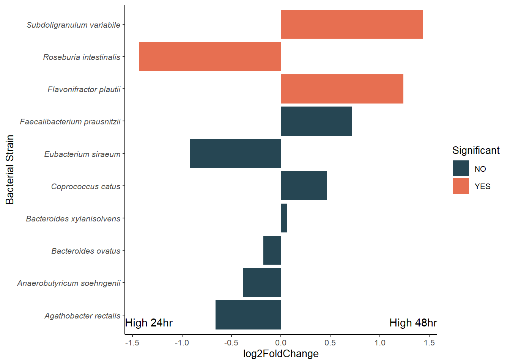
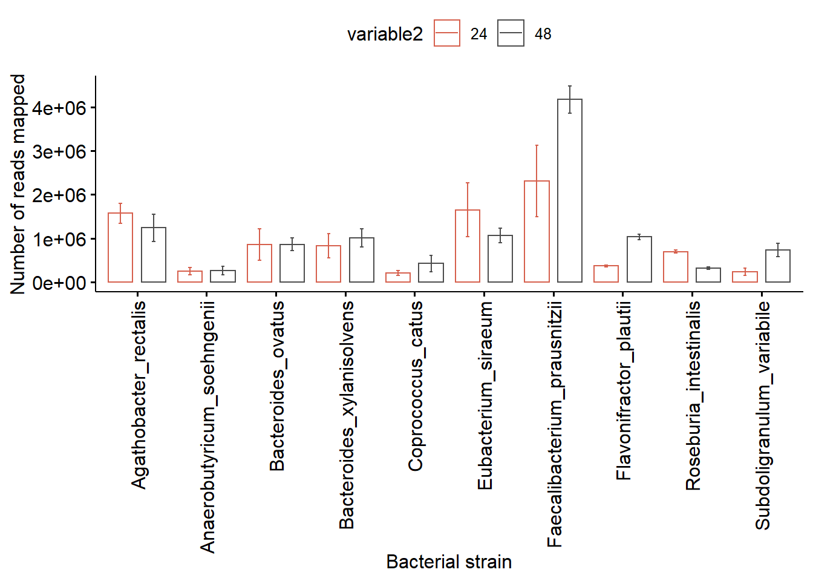

Last updated: 2021-04-05
Checks: 7 0
Knit directory: DbMM/
This reproducible R Markdown analysis was created with workflowr (version 1.6.2). The Checks tab describes the reproducibility checks that were applied when the results were created. The Past versions tab lists the development history.
Great! Since the R Markdown file has been committed to the Git repository, you know the exact version of the code that produced these results.
Great job! The global environment was empty. Objects defined in the global environment can affect the analysis in your R Markdown file in unknown ways. For reproduciblity it’s best to always run the code in an empty environment.
The command set.seed(20210404) was run prior to running the code in the R Markdown file. Setting a seed ensures that any results that rely on randomness, e.g. subsampling or permutations, are reproducible.
Great job! Recording the operating system, R version, and package versions is critical for reproducibility.
Nice! There were no cached chunks for this analysis, so you can be confident that you successfully produced the results during this run.
Great job! Using relative paths to the files within your workflowr project makes it easier to run your code on other machines.
Great! You are using Git for version control. Tracking code development and connecting the code version to the results is critical for reproducibility.
Note that you need to be careful to ensure that all relevant files for the analysis have been committed to Git prior to generating the results (you can use wflow_publish or wflow_git_commit). workflowr only checks the R Markdown file, but you know if there are other scripts or data files that it depends on. Below is the status of the Git repository when the results were generated:
Ignored files:
Ignored: .Rhistory
Ignored: .Rproj.user/
Untracked files:
Untracked: .Rprofile
Untracked: .gitattributes
Untracked: .gitignore
Untracked: DbMM.Rproj
Untracked: Ocucpancy_relationship.csv
Untracked: README.md
Untracked: _workflowr.yml
Untracked: analysis/
Untracked: bin/
Untracked: code/
Untracked: data/
Untracked: data_raw/
Untracked: ko00010.Glycolysis.png
Untracked: ko00010.png
Untracked: ko00010.xml
Untracked: ko00640.png
Untracked: ko00640.propanoate_metabolism.png
Untracked: ko00640.xml
Untracked: ko00650.butanoate_metabolism.png
Untracked: ko00650.png
Untracked: ko00650.xml
Untracked: output/
Untracked: structure.Rmd
Note that any generated files, e.g. HTML, png, CSS, etc., are not included in this status report because it is ok for generated content to have uncommitted changes.
There are no past versions. Publish this analysis with wflow_publish() to start tracking its development.
We use the output of SAMSA2 pipeline for organism hits to plot contribution of each strain to the total metatranscriptomics data.
# import other necessary packages
suppressPackageStartupMessages({
library(DESeq2)
library(ggplot2)
library(ggpubr)
library(tibble)
library(scales)
library(dplyr)
})
#library(optparse)The input files are stored in 04_metatrans/02_species_composition folder.
# GET FILE NAMES Control 24h
control_files <- list.files(path = "data_raw/04_metatrans/samsa_comp",
pattern = "control_*",
full.names = T, recursive = FALSE)
control_names <- ""
for (name in control_files) {
x <- gsub("data_raw/04_metatrans/samsa_comp/", "", name)
x <- gsub(".merged.RefSeq_annot_organism.tsv", "", x)
control_names <- c(control_names, x)
}
control_names[1] "" "control_B1T24" "control_B2T24" "control_B3T24"control_names_trimmed <- control_names[-1]
# Experimental 48h
exp_files <- list.files(path = "data_raw/04_metatrans/samsa_comp",
pattern = "experimental_*",
full.names = T,
recursive = FALSE)
exp_names = ""
for (name in exp_files) {
x <- gsub("data_raw/04_metatrans/samsa_comp/", "", name)
x <- gsub(".merged.RefSeq_annot_organism.tsv", "", x)
exp_names <- c(exp_names, x)
}
exp_names_trimmed <- exp_names[-1]
# sanity check
if (length(exp_files) == 0 || length(control_files) == 0) {
print ("\nWARNING: No files found. Is the directory correct? Are the files named with 'control_' and 'experimental_' as prefixes?")
stop()
}# READ IN FILES
# loading the control table
y <- 0
for (x in control_files) {
y <- y + 1
if (y == 1) {
control_table <- read.table(file = x, header = F, quote = "", sep = "\t")
colnames(control_table) = c("DELETE", x, "V3")
control_table <- control_table[,c(3,2)] }
if (y > 1) {
temp_table <- read.table(file = x, header = F, quote = "", sep = "\t")
colnames(temp_table) = c("DELETE", x, "V3")
temp_table <- temp_table[,c(2,3)]
control_table <- merge(control_table, temp_table, by = "V3", all = T) }
}
control_table[is.na(control_table)] <- 0
rownames(control_table) = control_table$V3
control_table_trimmed <- data.frame(control_table[,-1])
# this next step is for if there's only 1 control file (no replicates)
if (y == 1) {
rownames(control_table_trimmed) = rownames(control_table)
}
# loading the experimental table
z <- 0
for (x in exp_files) {
z <- z + 1
if (z == 1) {
exp_table <- read.table(file = x, header=F, quote = "", sep = "\t")
colnames(exp_table) = c("DELETE", x, "V3")
exp_table <- exp_table[,c(2,3)] }
if (z > 1) {
temp_table <- read.table(file = x, header = F, quote = "", sep = "\t")
colnames(temp_table) = c("DELETE", x, "V3")
exp_table <- merge(exp_table, temp_table[,c(2,3)], by = "V3", all = T) }
}
exp_table[is.na(exp_table)] <- 0
rownames(exp_table) = exp_table$V3
exp_table_trimmed <- exp_table[,-1]
# getting the column names simplified
colnames(control_table_trimmed) = control_names_trimmed
colnames(exp_table_trimmed) = exp_names_trimmed
# merging the two tables
complete_table <- merge(control_table_trimmed, exp_table_trimmed, by=0, all = TRUE)
complete_table[is.na(complete_table)] <- 0
# reducing stuff down to avoid duplicates
complete_table <- aggregate(. ~ Row.names, data = complete_table, sum)
rownames(complete_table) <- complete_table$Row.names
complete_table <- complete_table[!(complete_table$Row.names == ""), ]
# removing extra Row.names column
complete_table <- complete_table[,-1]
complete_table.a <- complete_table
colnames(complete_table.a) [1] "control_B1T24" "control_B2T24" "control_B3T24"
[4] "experimental_B1T48" "experimental_B2T48" "experimental_B3T48"colnames(complete_table.a) <- gsub("control_", "", colnames(complete_table.a))
colnames(complete_table.a) <- gsub("experimental_", "", colnames(complete_table.a))
#Agathobacter_rectalis 3449685
#Anaerobutyricum_soehngenii 3515670
#Bacteroides_ovatus 6549480
#Bacteroides_xylanisolvens 5912968
#Coprococcus_catus 3629509
#Eubacterium_siraeum 2664040
#Faecalibacterium_prausnitzii 3090350
#Lachnospiraceae_bacterium_7_1_58FAA 5622443
#Roseburia_intestinalis 4411370
#Subdoligranulum_variabile 3237471head(complete_table.a) B1T24 B2T24 B3T24 B1T48 B2T48 B3T48
Agathobacter_rectalis 1189883 1533353 1994131 680440 1288745 1758023
Anaerobutyricum_soehngenii 253483 385919 100388 153621 188132 462404
Bacteroides_ovatus 396928 612919 1564701 664898 778758 1144162
Bacteroides_xylanisolvens 415784 718469 1352381 627481 1064527 1337283
Coprococcus_catus 268453 256730 97931 255466 210763 806083
Eubacterium_siraeum 1705679 2685626 562719 1248773 1228419 738649Not required as these are mapped on protiens and not genomes (DNA)
complete_table.gsize <- complete_table.a
#complete_table.gsize$GenomeSize <- c(3.4, 3.5, 6.5, 5.9, 3.6, 2.6,3.0, 5.6, 4.4, 3.2)
# Use genome size to normalize the reads
complete_table.gsize <- c(3.4, 3.5, 6.5, 5.9, 3.6, 2.6,3.0, 5.6, 4.4, 3.2)
#corrected_tab <- ceiling((complete_table.gsize) / complete_table.gsize[, "GenomeSize"])
# calcualte transcripts per million
tpm <- function(counts, lengths) {
rate <- counts / lengths
rate / sum(rate) * 1e6
}
species_abund_tpm <- ceiling(tpm(complete_table.a, complete_table.gsize))
species_abund_tpm.a <- as.data.frame(species_abund_tpm)species_abund_tpm.a <- as.data.frame(complete_table.a)
#DT::datatable(count.aggregate.kegg)
coldata.df <- data.frame(SampleID = c("B1T24","B2T24","B3T24","B1T48","B2T48","B3T48"),
condition = c("24h","24h","24h", "48h","48h","48h"))
#coldata.df
#write.table(coldata.df, "tables/coldata_df.txt", sep = "\t")
dds <- DESeqDataSetFromMatrix(countData = species_abund_tpm.a,
colData = coldata.df,
design = ~ condition)Warning in DESeqDataSet(se, design = design, ignoreRank): some variables in
design formula are characters, converting to factorsddsclass: DESeqDataSet
dim: 10 6
metadata(1): version
assays(1): counts
rownames(10): Agathobacter_rectalis Anaerobutyricum_soehngenii ...
Roseburia_intestinalis Subdoligranulum_variabile
rowData names(0):
colnames(6): B1T24 B2T24 ... B2T48 B3T48
colData names(2): SampleID conditiondds <- DESeq(dds,fitType= "local")estimating size factorsestimating dispersionsgene-wise dispersion estimatesmean-dispersion relationshipfinal dispersion estimatesfitting model and testingres <- results(dds)
spces_results <- data.frame(res)
spces_results <- spces_results[order(-spces_results$baseMean),]
write.table(spces_results, "data/04_metatrans/tables/RNA_activity_DESeq2.txt", sep="\t")
saveRDS(spces_results, "data/04_metatrans/rds/spces_results.rds")Plot fold change
spces_results <- spces_results %>%
rownames_to_column("BacterialStrain") %>%
mutate(Significant = ifelse(padj <= 0.05, "YES", "NO"))
spces_results$BacterialStrain <- gsub("Lachnospiraceae_bacterium_7_1_58FAA", "Flavonifractor_plautii",
spces_results$BacterialStrain )
spces_results$BacterialStrain <- gsub("_", " ",
spces_results$BacterialStrain )
p.chn <- ggplot(spces_results,
aes(y= BacterialStrain, x= log2FoldChange)) +
geom_col(aes(fill=Significant)) + theme_classic2(base_size = 10) +
scale_fill_manual(values=c("#264653", "#e76f51")) +
theme(axis.text.y = element_text(hjust=1, face = "italic")) +
geom_text(data = data.frame(), aes(x = c(Inf, -Inf),
y = c(-Inf, -Inf),
hjust = c(1, 0),
vjust = c(-1, -1),
label = c("High 48hr","High 24hr"))) +
ylab("Bacterial Strain")
p.chn
ggsave("data/04_metatrans/figs/RNA_activity_foldChange.pdf", height = 3, width = 5)species_abund_tpm.a$BacterialStrain <- rownames(species_abund_tpm.a)
species_abund_tpm_ldf <- reshape::melt(species_abund_tpm.a)Using BacterialStrain as id variables# plotting
species_abund_tpm_ldf$variable2 <- species_abund_tpm_ldf$variable
species_abund_tpm_ldf$variable2 <- gsub("B1T", "",species_abund_tpm_ldf$variable2)
species_abund_tpm_ldf$variable2 <- gsub("B2T", "",species_abund_tpm_ldf$variable2)
species_abund_tpm_ldf$variable2 <- gsub("B3T", "",species_abund_tpm_ldf$variable2)
head(species_abund_tpm_ldf) BacterialStrain variable value variable2
1 Agathobacter_rectalis B1T24 1189883 24
2 Anaerobutyricum_soehngenii B1T24 253483 24
3 Bacteroides_ovatus B1T24 396928 24
4 Bacteroides_xylanisolvens B1T24 415784 24
5 Coprococcus_catus B1T24 268453 24
6 Eubacterium_siraeum B1T24 1705679 24species_abund_tpm_ldf$BacterialStrain <- gsub("Lachnospiraceae_bacterium_7_1_58FAA", "Flavonifractor_plautii",species_abund_tpm_ldf$BacterialStrain)
ggpubr::ggbarplot(species_abund_tpm_ldf, x ="BacterialStrain", y = "value",
color = "variable2",
add = "mean_se",
ylab = "Number of reads mapped",
xlab ="Bacterial strain",
position = position_dodge(),
palette = c("#d6604d", "#4d4d4d")) +
rotate_x_text() 
ggsave("data/04_metatrans/figs/RNA_activity_Spps_barplot_comparison.pdf", height = 7, width = 6)sessionInfo()R version 4.0.3 (2020-10-10)
Platform: x86_64-w64-mingw32/x64 (64-bit)
Running under: Windows 10 x64 (build 19042)
Matrix products: default
locale:
[1] LC_COLLATE=English_Netherlands.1252 LC_CTYPE=English_Netherlands.1252
[3] LC_MONETARY=English_Netherlands.1252 LC_NUMERIC=C
[5] LC_TIME=English_Netherlands.1252
attached base packages:
[1] parallel stats4 stats graphics grDevices utils datasets
[8] methods base
other attached packages:
[1] dplyr_1.0.2 scales_1.1.1
[3] tibble_3.0.4 ggpubr_0.4.0
[5] ggplot2_3.3.2 DESeq2_1.29.16
[7] SummarizedExperiment_1.20.0 Biobase_2.50.0
[9] MatrixGenerics_1.2.0 matrixStats_0.57.0
[11] GenomicRanges_1.42.0 GenomeInfoDb_1.26.0
[13] IRanges_2.24.0 S4Vectors_0.28.0
[15] BiocGenerics_0.36.0 workflowr_1.6.2
loaded via a namespace (and not attached):
[1] bitops_1.0-6 fs_1.5.0 bit64_4.0.5
[4] RColorBrewer_1.1-2 httr_1.4.2 rprojroot_1.3-2
[7] tools_4.0.3 backports_1.2.0 R6_2.5.0
[10] DBI_1.1.0 colorspace_1.4-1 withr_2.3.0
[13] tidyselect_1.1.0 bit_4.0.4 curl_4.3
[16] compiler_4.0.3 git2r_0.27.1 DelayedArray_0.16.0
[19] labeling_0.4.2 genefilter_1.71.0 stringr_1.4.0
[22] digest_0.6.27 foreign_0.8-80 rmarkdown_2.4
[25] rio_0.5.16 XVector_0.30.0 pkgconfig_2.0.3
[28] htmltools_0.5.1.1 readxl_1.3.1 rlang_0.4.8
[31] rstudioapi_0.11 RSQLite_2.2.1 farver_2.0.3
[34] generics_0.1.0 BiocParallel_1.24.0 zip_2.1.1
[37] car_3.0-10 RCurl_1.98-1.2 magrittr_1.5
[40] GenomeInfoDbData_1.2.4 Matrix_1.2-18 Rcpp_1.0.5
[43] munsell_0.5.0 abind_1.4-5 lifecycle_0.2.0
[46] stringi_1.5.3 yaml_2.2.1 carData_3.0-4
[49] zlibbioc_1.36.0 plyr_1.8.6 grid_4.0.3
[52] blob_1.2.1 promises_1.1.1 forcats_0.5.0
[55] crayon_1.3.4 lattice_0.20-41 haven_2.3.1
[58] splines_4.0.3 annotate_1.67.2 hms_0.5.3
[61] locfit_1.5-9.4 knitr_1.30 pillar_1.4.6
[64] ggsignif_0.6.0 geneplotter_1.67.0 XML_3.99-0.5
[67] glue_1.4.2 evaluate_0.14 data.table_1.13.0
[70] vctrs_0.3.4 httpuv_1.5.4 cellranger_1.1.0
[73] gtable_0.3.0 purrr_0.3.4 tidyr_1.1.2
[76] reshape_0.8.8 xfun_0.17 openxlsx_4.2.2
[79] xtable_1.8-4 broom_0.7.1 rstatix_0.6.0
[82] later_1.1.0.1 survival_3.2-7 AnnotationDbi_1.51.3
[85] memoise_1.1.0 ellipsis_0.3.1
sessionInfo()R version 4.0.3 (2020-10-10)
Platform: x86_64-w64-mingw32/x64 (64-bit)
Running under: Windows 10 x64 (build 19042)
Matrix products: default
locale:
[1] LC_COLLATE=English_Netherlands.1252 LC_CTYPE=English_Netherlands.1252
[3] LC_MONETARY=English_Netherlands.1252 LC_NUMERIC=C
[5] LC_TIME=English_Netherlands.1252
attached base packages:
[1] parallel stats4 stats graphics grDevices utils datasets
[8] methods base
other attached packages:
[1] dplyr_1.0.2 scales_1.1.1
[3] tibble_3.0.4 ggpubr_0.4.0
[5] ggplot2_3.3.2 DESeq2_1.29.16
[7] SummarizedExperiment_1.20.0 Biobase_2.50.0
[9] MatrixGenerics_1.2.0 matrixStats_0.57.0
[11] GenomicRanges_1.42.0 GenomeInfoDb_1.26.0
[13] IRanges_2.24.0 S4Vectors_0.28.0
[15] BiocGenerics_0.36.0 workflowr_1.6.2
loaded via a namespace (and not attached):
[1] bitops_1.0-6 fs_1.5.0 bit64_4.0.5
[4] RColorBrewer_1.1-2 httr_1.4.2 rprojroot_1.3-2
[7] tools_4.0.3 backports_1.2.0 R6_2.5.0
[10] DBI_1.1.0 colorspace_1.4-1 withr_2.3.0
[13] tidyselect_1.1.0 bit_4.0.4 curl_4.3
[16] compiler_4.0.3 git2r_0.27.1 DelayedArray_0.16.0
[19] labeling_0.4.2 genefilter_1.71.0 stringr_1.4.0
[22] digest_0.6.27 foreign_0.8-80 rmarkdown_2.4
[25] rio_0.5.16 XVector_0.30.0 pkgconfig_2.0.3
[28] htmltools_0.5.1.1 readxl_1.3.1 rlang_0.4.8
[31] rstudioapi_0.11 RSQLite_2.2.1 farver_2.0.3
[34] generics_0.1.0 BiocParallel_1.24.0 zip_2.1.1
[37] car_3.0-10 RCurl_1.98-1.2 magrittr_1.5
[40] GenomeInfoDbData_1.2.4 Matrix_1.2-18 Rcpp_1.0.5
[43] munsell_0.5.0 abind_1.4-5 lifecycle_0.2.0
[46] stringi_1.5.3 yaml_2.2.1 carData_3.0-4
[49] zlibbioc_1.36.0 plyr_1.8.6 grid_4.0.3
[52] blob_1.2.1 promises_1.1.1 forcats_0.5.0
[55] crayon_1.3.4 lattice_0.20-41 haven_2.3.1
[58] splines_4.0.3 annotate_1.67.2 hms_0.5.3
[61] locfit_1.5-9.4 knitr_1.30 pillar_1.4.6
[64] ggsignif_0.6.0 geneplotter_1.67.0 XML_3.99-0.5
[67] glue_1.4.2 evaluate_0.14 data.table_1.13.0
[70] vctrs_0.3.4 httpuv_1.5.4 cellranger_1.1.0
[73] gtable_0.3.0 purrr_0.3.4 tidyr_1.1.2
[76] reshape_0.8.8 xfun_0.17 openxlsx_4.2.2
[79] xtable_1.8-4 broom_0.7.1 rstatix_0.6.0
[82] later_1.1.0.1 survival_3.2-7 AnnotationDbi_1.51.3
[85] memoise_1.1.0 ellipsis_0.3.1